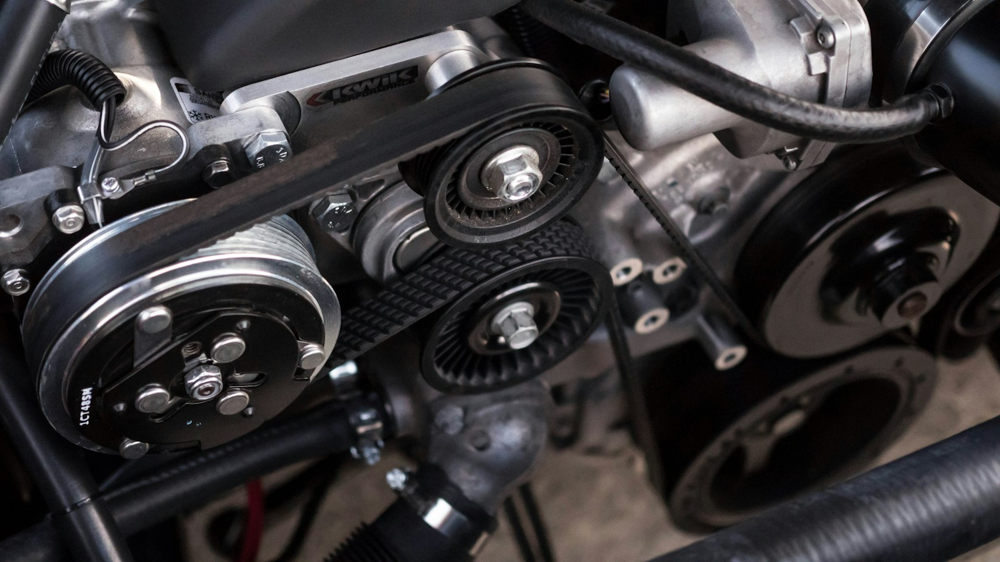
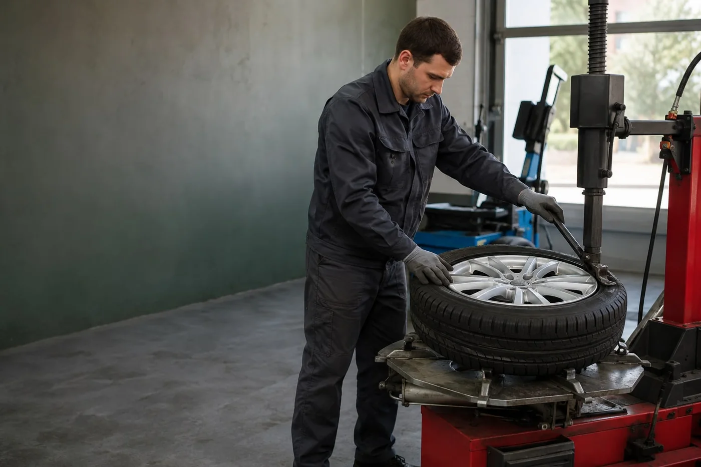
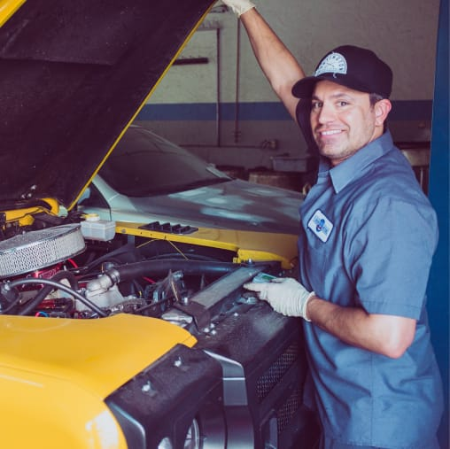

★★★★★
«Ребята быстро сделали диагностику, нашли проблему и в тот же день всё починили. Запчасти подобрали сами, цены адекватные».

Диагностика, ремонт двигателя, подвески и электрики.
Сезонный шиномонтаж. Обслуживаем автомобили любых марок.
Стоимость согласуем до начала работ.
Цена до начала работВсё согласуем заранее
Официальная гарантияНа работы и запчасти
Все марки автомобилейЕвропа, Азия и Америка
09:00–21:00 каждый деньУдобно даже в выходные

СЕЗОННАЯ СМЕНА ШИНСнятие колёс, замена шин, балансировка и установка.
Легковые автомобили, внедорожники и микроавтобусы.
По предварительной записи.
Добавьте услуги в расчёт — узнайте предварительную
стоимость до звонка в сервис.
Работа не найдена. Измените запрос или спросите мастера.
Нужна консультация? Позвонить мастеру

Принимаем автомобиль, проводим диагностику и составляем смету. До начала ремонта согласуем с вами перечень работ, стоимость и сроки.
Проверяем автомобиль диагностическим оборудованием и определяем неисправность.
Список работ, стоимость и сроки обсуждаем до ремонта.
Работаем по технологическим картам производителей. Даём официальную гарантию.
«Ребята быстро сделали диагностику, нашли проблему и в тот же день всё починили. Запчасти подобрали сами, цены адекватные».
«Мастер всё подробно объяснил, лишних услуг не навязывали, старые детали вернули. Рекомендую!»
Отзывы, фотографии и расположение СТО
в карточке организации.
Время работы зависит от модели автомобиля, доступа к узлу и состояния крепежа. Калькулятор складывает начальные цены из прайса. Точную стоимость и дополнительные операции согласуем до выполнения работ.
Нет, цены указаны только за работу. Детали, масла и расходники рассчитываются отдельно. Для шиномонтажа отдельно оплачиваются грузы и вентили. Поможем подобрать оригинальные запчасти или проверенные аналоги.
Снятие четырёх колёс, демонтаж и монтаж шин, балансировка и установка. Цены рассчитаны для обычных шин и односкатных колёс. RunFlat, усиленные C/LT, низкий профиль и сдвоенные колёса — по отдельному расчёту.
Позвоните по номеру +375 (29) 809-91-91 или напишите в Telegram. Сообщите марку и модель автомобиля, нужные работы и желаемое время. Сервис работает ежедневно с 09:00 до 21:00.